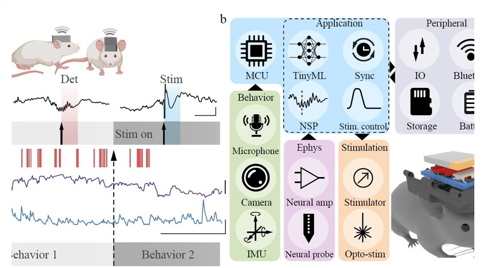

Zifang "Frank" Zhao
Research Associate, Cornell University
Zifang Zhao is a Research Associate in the Department of Neurobiology and Behavior at Cornell University. His work develops minimally invasive bioelectronic technologies for mechanistic studies of neural circuits in epilepsy, chronic pain, and naturalistic behavior. His training spans neuroscience, electrical engineering, embedded systems, and bioelectronic materials across Peking University, NYU Langone Medical Center, Columbia University, and Cornell University.